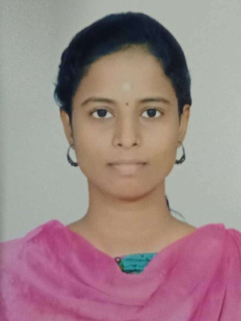

|

|
DHARANI T
EmailID: dharanitsep19@gmail.com
Location: Bangalore, Karnataka, India
LinkedIn ID: Dharani T
|
OBJECTIVE
To work in an innovative challenging environment which helps sharpen my technical proficiency, in order to fast changing needs of the world, thereby contributing my best for the growth of the organization.
EDUCATIONAL DETAILS
| COURSE |
INSTITUTION |
UNIVERSITY/BOARD |
YEAR PASSED |
CGPA/MARK% |
| BE(ECE) |
Thanthai Periyar Government Institute of Technology, Vellore |
Anna University |
2021 |
8.65 |
| HSC |
Ethiraj Matriculation Higher Secondary School, Vellore |
State Board |
2017 |
96% |
| SSLC |
Ethiraj Matriculation Higher Secondary School, Vellore |
State Board |
2015 |
98% |
SKILLS
- Core JAVA, PYTHON, C++ : OOPs Concepts
- C# and ASP.NET : API Concepts
- C : Algorithms, Data Structure
- HTML5, CSS, JAVASCRIPT : Web Development
- SQL : Queries, Knowledge in DML, DDL, TCL
- MS EXCEL
- LINUX : Command Line, Bash shell scripting, System Administration
- Basics of UNIX and WINDOWS
AREAS OF INTEREST
- Web Development
- Cloud Computing and DevOps
ASPIRATION
- Want to become Full Stack Web Developer.
- Interested in Cloud Computing.
TRAINING AND INTERNSHIP ATTENDED & INDUSTRIAL VISIT
- Active participation in National Council for Science and Technology Communication's one day workshop on "Transit of Venus, Eclipses and other Celestial Events" in 2014(9thstd).
- Undergone training in BSNL, Katpadi on "Fundamentals of Telecom" in 2019.
- Done Internship and In-plant training in Kaashiv Infotech Software Development & Electronics/IOT Research Company, Chennai on "Internet of Things & Digital marketing" in 2019.
- Attended one day workshop in Vellore Institute of Technology (VIT) on "Ethical Hacking and Cyber Security" in 2019.
- Industrial Visit to "RADIO ASTRONOMY CENTRE" at Ooty.
WORK EXPERIENCE
Presently working in Tata Consultancy Service, Bangalore (From June 3, 2021 to Current) as Assistant System Engineer in Bangalore.
ACHIEVEMENTS
- Got school first mark during 11th and 12th standards.
- Academic topper during 4years of college.
- Secured first class in typewriting English (Lower).
DECLARATION
I, DHARANI T, do hereby confirm that the information given above is true to the best of my knowledge.